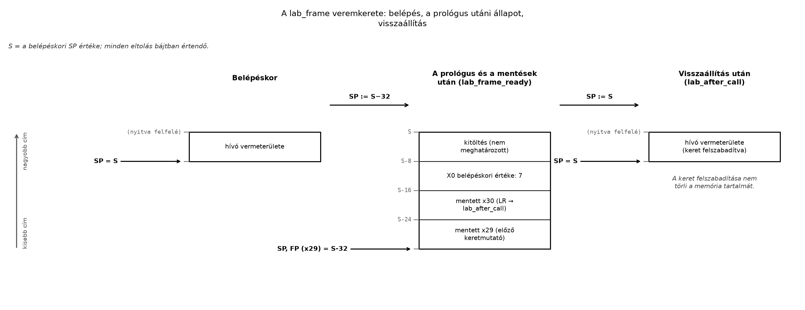

Egy C-függvény lokális változókat használ, közben másik függvényt hív, majd visszatér a hívójához. Assemblyben mindhárom művelethez konkrét tárolási és helyreállítási döntés tartozik. Hol marad meg az eredeti argumentum, ha a meghívott függvény felülírja az argumentumregisztert? Mi őrzi a visszatérési címet, ha egy újabb hívás megváltoztatja azt?
A megoldás egyik alapvető eszköze a veremkeret (stack frame): a veremnek az aktuális függvényaktivációhoz rendelt területe. Rekurzív híváskor ugyanannak a függvénynek több, egymástól elkülönülő aktivációja és kerete lehet.
Az alfejezet teljes architekturális kontextusa: A64 ISA, AArch64 Linux, ARMv8-A alapprofil, little-endian. Az alábbi regiszterek és utasítások ebben a környezetben értendők; az assemblydirektívák a GNU assembler AArch64-célú használatához tartoznak.
A Hívás és visszatérés: BL/RET bevezető
mintája alapján már tudjuk: a BL az X30
regiszterbe írja a visszatérési címet, de nem készít veremkeretet. Most
ezt a hiányzó műveletsort építjük fel. A teljes regisztermegőrzési
szerződést Az AAPCS64 regiszterszerződés
tárgyalja.
A veremmutató (stack pointer) A64-en az
SP. Az AAPCS64 lefelé növekvő vermet ír le: új terület
lefoglalásakor a veremmutató értéke csökken.
Legyen a függvény belépésekor:
Ha a függvény bájtos keretet foglal, akkor:
Itt egy bájtcím, pedig bájtban megadott, nemnegatív keretméret. A frissen lefoglalt tartomány:
Az alsó határ beletartozik, a felső nem. Ezért az új keret első
bájtja az új SP által mutatott helyen van; az utolsó bájtja
az eredeti SP előtti bájt.
| Relatív hely | Jelentés |
|---|---|
Az S címtől felfelé |
A hívóhoz tartozó aktív veremtartomány |
[S-n, S) |
Az aktuálisan lefoglalt keret |
Az S-n cím alatt |
Még nem lefoglalt veremterület |
Az A64 egyszerű keretfoglalási mintája:
// A64 ISA; szemléltető részlet.
sub sp, sp, #32 // 32 bájt lefoglalása
// A keret használata.
add sp, sp, #32 // Az eredeti SP visszaállításaA „lefelé” itt kisebb numerikus címeket jelent, nem fizikai irányt. A memória bájtjai továbbra is növekvő címekkel követik egymást; egy mező bájtsorrendjét ettől függetlenül a little-endian profil határozza meg.
A keretfoglalás nem nullázza a memóriát, és nem kér új leképezést az
operációs rendszertől. A SUB csak a regiszter értékét
változtatja meg. A Linux veremkezelése, a rendelkezésre álló virtuális
címtartomány és a veremméretkorlát külön réteg. Túl nagy keret esetén a
későbbi memóriaelérés hibát okozhat.
Nincs általánosan használható, az aktuális SP
alatti ideiglenes tárolóterület: az AAPCS64 szerint előbb le
kell foglalni a szükséges részt, és csak utána szabad benne adatot
elhelyezni.
Az igazítás (alignment) azt jelenti, hogy egy cím egy megadott határ többszöröse. A 16 bájtosan igazított veremmutató feltétele:
Bitszinten ez azt jelenti, hogy az SP alsó négy bitje
0b0000.
Két szabályréteget különböztessünk meg:
SP-n keresztüli
memóriaeléréshez szintén teljesülnie kell az előírt igazításnak.SP-alapú memóriaelérésekhez igazításellenőrzés
kapcsolódhat. A szabálysértés konkrét hibajelenségét az engedélyezett
ellenőrzések és az emulátor viselkedése is befolyásolja.A labor egyszerűbb, erősebb szabályt követ: az
SP minden köztes állapotában is 16 bájtosan igazított
marad.
Ez nem azért szükséges, mert az A64 minden adatátvitele 16 bájtos
lenne. Az itt használt Xn regiszterek 8 bájtos adatokat
tárolnak. A közös 16 bájtos határ egységes ABI-alapot ad többek között a
nagyobb igazításigényű adatok és a különböző fordítóprogramok által
előállított keretek kezeléséhez. Egyedi utasítások igazítási
lehetőségeiből nem következik, hogy az ABI-követelmény elhagyható.
Tegyük fel, hogy:
SP 16 bájtosan igazított;Ekkor a minimális, 16 bájtra kerekített keretméret:
Az és mennyiségek egysége bájt. Egyetlen 8 bájtos lokális értéknél:
A tényleges adattartalom 24 bájt; további 8 bájt kitöltés (padding) szükséges.
Az igazítás megmarad, mert:
Ezzel szemben 24 bájt levonása után:
A 24 bájtos keret tehát elég lenne az adatok mérete alapján, de nem tartaná meg az előírt veremigazítást. Maga a kivonás nem feltétlenül okoz kivételt; ettől a létrejött állapot még szabálytalan lehet.
A veremkeret a híváslánc egy szintjének saját „ablaka”. A függvény ismert eltolásokkal éri el benne a megőrzendő értékeket.
A példánk keretelrendezése:
Eltolás az új SP-hez képest |
Méret | Tartalom |
|---|---|---|
+0 |
8 bájt | A hívó mentett X29 értéke |
+8 |
8 bájt | A belépéskori X30, vagyis az LR |
+16 |
8 bájt | Lokális tároló: az eredeti argumentum |
+24 |
8 bájt | Kitöltés; tartalma nem meghatározott |
A két első mező együtt keretrekordot (frame record) alkot. Az AAPCS64 szerinti rekord alacsonyabb című eleme az előző keretrekord mutatója, a magasabb című eleme a mentett visszatérési cím. A rekord helye a kereten belül általánosan nem rögzített; itt tudatosan a keret aljára helyezzük.
A keretmutató (frame pointer, FP) szerepét az
X29 töltheti be. A példában:
// A64 ISA; a régi X29 mentése után.
mov x29, spEttől kezdve az X29 az új keretrekordra mutat. A régi
X29 mentése láncot hoz létre a korábbi keretek felé.
A keretmutató előnye a stabil viszonyítási pont. Ha egy összetettebb
függvény később módosítja az SP-t, az X29
továbbra is a kiválasztott keretbázist jelölheti.
A keretmutató használata nem minden függvényben
kötelező. A platformszabályok és a fordítási beállítások
függvényében optimalizált Linux-kód elhagyhatja. Fix méretű keret mezői
közvetlenül az SP-hez képest is elérhetők. A keretmutató
hiánya nem jelenti a veremkeret hiányát, és nem szünteti meg a
regisztermegőrzési kötelezettségeket.
A példában a keretrekordot megmutatjuk, de automatikus veremvisszafejtési metaadatot nem készítünk; a debugger teljes visszahívásilánc-felismerését ezért nem tekintjük ellenőrzött tulajdonságnak.
Munkakönyvtár: ~/arm-labor/a64/a027/ —
az alfejezet minden laborfájlja ide kerül, és minden parancs innen
futtatandó (a könyvtárrendet a Labor-alapkörnyezet alfejezet írja le).
mkdir -p ~/arm-labor/a64/a027
cd ~/arm-labor/a64/a027A program egy előjel nélküli, 64 bites bemeneten ezt számolja:
Az összeadások A64-en modulo értendők. A választott bemenetnél nincs túlcsordulás, az eredmény 19.
A lab_frame függvény:
SP-t.Mentsük a következő teljes forrást lab-stack.s néven. A
program _start-tal induló, önálló szemléltetés, ezért
CFI nélküli: a kerete csak a keretlánc alapján
követhető. A C-ből hívható függvények CFI-szabályát a Prológus és epilógus alfejezet adja.
// A64 ISA, ARMv8-A; GNU as; little-endian laborprofil.
.section .text
.p2align 2
.global _start
.type _start, %function
_start:
mov x29, xzr // A demonstráció keretláncának vége.
mov x0, #7 // Előjel nélküli, 64 bites bemenet.
lab_call:
bl lab_frame
lab_after_call:
cmp x0, #19
cset x0, ne // 0: helyes eredmény; 1: eltérés.
mov x8, #93 // Linux AArch64 exit rendszerhívás.
svc #0
.size _start, . - _start
.p2align 2
.type lab_frame, %function
lab_frame:
sub sp, sp, #32
str x29, [sp, #0]
str x30, [sp, #8]
mov x29, sp
str x0, [sp, #16]
lab_frame_ready:
bl lab_bump
lab_after_child:
ldr x1, [sp, #16]
add x0, x0, x1
ldr x30, [sp, #8]
ldr x29, [sp, #0]
add sp, sp, #32
ret
.size lab_frame, . - lab_frame
.p2align 2
.type lab_bump, %function
lab_bump:
add x0, x0, #5
ret
.size lab_bump, . - lab_bump
.section .note.GNU-stack,"",%progbitsA lab_bump levélfüggvény: nem végez további hívást, és
nincs szüksége saját keretre. A hívó lab_frame viszont nem
hagyhatja kizárólag az X30-ban a visszatérési címét, mert a
belső BL felülírja azt.
A kódbeli konstansok és eltolások mind kódolhatók (lásd az A64 immediate-korlátok összefoglalóját). A példára
jellemző feltétel: az [SP, #offset] eltolásoknak 8
többszörösének kell lenniük, mert a 64 bites
LDR/STR 8 bájttal skálázza a mezőt.
A MOV X29, SP nem általános logikai adatmozgatás:
assembleralias az ADD X29, SP, #0 alakra.
Cél: qemu-user, qemu-aarch64,
little-endian AArch64 Linux. A parancsok az Ubuntu 24.04-es
laborprofil telepített cross-eszközeit feltételezik.
# Target: qemu-user / AArch64 Linux, little-endian.
aarch64-linux-gnu-as -g -EL -march=armv8-a \
-o lab-stack.o lab-stack.s
aarch64-linux-gnu-ld -EL -e _start \
-o lab-stack lab-stack.o
qemu-aarch64 ./lab-stack
lab_status=$?
printf 'kilepesi_allapot=%d\n' "$lab_status"
# Az előállított A64 gépi kód ellenőrzése.
aarch64-linux-gnu-objdump -d lab-stackLevezetett, várt eredmény: a program nem ír saját
szöveget; a shell kilepesi_allapot=0 sort jelenít meg. Az
összeállítás és linkelés várt kilépési állapota szintén 0. A kód itt nem
futott.
A helyes számeredmény önmagában nem bizonyítja a helyes keretkezelést. Ellenőrizzük külön a veremmutatót és a mentett tartalmat.
Az alábbi ábra a lab_frame keretét mutatja három
pillanatban — ugyanazokat az állapotokat, amelyeket a következő
GDB-munkamenet számokkal is igazol: a belépéskori SP = S, a
lab_frame_ready-nél rögzült, konkrét címekkel feliratozott,
összefüggő 32 bájtos keret, majd a visszaállítás utáni, ismét
SP = S állapot.

Az első terminálban:
# Target: qemu-user; induláskor debuggerre vár.
qemu-aarch64 -g 1234 ./lab-stack
printf 'kilepesi_allapot=%d\n' "$?"A második terminálban az alábbi parancs végigvezeti a vizsgálatot. A
$entry_sp GDB-kényelmi változó, nem A64-regiszter.
# Host: gdb-multiarch; target: az előző qemu-aarch64 folyamat.
gdb-multiarch -q ./lab-stack \
-ex 'target remote :1234' \
-ex 'break lab_call' \
-ex 'continue' \
-ex 'set $entry_sp = $sp' \
-ex 'break lab_frame_ready' \
-ex 'continue' \
-ex 'p/d $entry_sp - $sp' \
-ex 'p/d ((unsigned long)$sp & 15)' \
-ex 'x/4gx $sp' \
-ex 'p/x &lab_after_call' \
-ex 'break lab_after_child' \
-ex 'continue' \
-ex 'p/d $x0' \
-ex 'p/d *(unsigned long *)($sp + 16)' \
-ex 'break lab_after_call' \
-ex 'continue' \
-ex 'p/d $x0' \
-ex 'p/d $sp == $entry_sp' \
-ex 'continue' \
-ex 'quit'A vizsgálat nem feltételez rögzített numerikus veremcímet: a tényleges QEMU-folyamat regiszterértékéből indul ki.
| Megállási pont | Levezetett, várt állapot |
|---|---|
lab_frame_ready |
$entry_sp - $sp értéke 32 |
lab_frame_ready |
Az SP alsó négy bitjének értéke 0 |
lab_frame_ready |
A négy 8 bájtos mező: 0; lab_after_call címe; 7; nem
meghatározott kitöltés |
lab_after_child |
X0 = 12; a lokális tároló értéke továbbra is 7 |
lab_after_call |
X0 = 19; $sp == $entry_sp értéke 1 |
A mentett visszatérési cím az eredeti hívó folytatására, a
lab_after_call címkére mutat. A belső hívás után az
aktuális X30 már a lab_after_child címet
tartalmazza. Ezért szükséges a mentett érték visszatöltése a végső
RET előtt.
Helyes eredmény, hibás visszaállítás. Ha a foglalás
32 bájt, de a felszabadítás csak 16, a számítás még lehet helyes. A hívó
azonban rossz SP-t kap vissza. Tünetből kiindulva
ellenőrizzük a belépési és kilépési érték különbségét, majd az
objdump kimenetében a két immediate mezőt.
Elveszett visszatérési cím. Ha kimarad az
X30 mentése vagy visszatöltése, a végső RET a
belső hívás utáni helyre térhet vissza. Ez ismételt keretbontáshoz,
hibás memóriaeléréshez vagy nem várt vezérléshez vezethet. Ellenpróba:
megállás a RET előtt, majd az X30 összevetése
az elvárt hívói folytatással.
24 bájtos keret. Az adatméret helyes, az igazítás hibás. Egy QEMU-futtatás látszólagos sikere nem igazolja az ABI-megfelelést. Az alsó négy bit explicit ellenőrzése döntő.
A régi keretmutató túl korai felülírása. Ha a
MOV X29, SP megelőzi a régi X29 mentését, az
előző keret címe elvész. A mentett mezőt a debuggerben kell
megvizsgálni, nem csupán a visszatérési értéket.
A kitöltés nullának feltételezése. A keretfoglalás nem inicializál. A padding tartalma nem programeredmény, és összehasonlításban nem szabad meghatározott értéket várni tőle.
A javítási munkamenet minden esetben: hipotézis → regiszter- vagy memóriaadat gyűjtése → egyetlen célzott módosítás → újbóli ellenőrzés.
Magyarázó feladat (alapszint — cél: megértés-ellenőrzés). Miért kivonással foglalunk keretet? Miért nem elég a példában 24 bájt? Magyarázd el azt is, miért nem függ a verem növekedési iránya a little-endian bájtsorrendtől.
Implementációs feladat (középszint — cél:
rutinépítés). Bővítsd a lab-stack.s keretét úgy,
hogy a keretrekord mellett három 8 bájtos lokális értéket tároljon:
7-et, 11-et és 13-at. A segédfüggvény továbbra is az eredeti 7-hez adjon
5-öt. Ezután add hozzá mindhárom tárolt értéket. Határozd meg a
keretméretet, az eltolásokat és az új elvárt eredményt. A fenti
buildlépésekkel ellenőrizd.
Hibakeresési feladat (középszint — cél:
rutinépítés). Az eredeti példában kizárólag a visszaállító
ADD SP, SP, #32 immediate értékét változtasd 16-ra. Miért
adhat a program továbbra is 0 kilépési állapotot? Mutasd ki GDB-vel a
hibát, majd állítsd vissza az eredeti utasítást.
1. megoldás — Segítség. Gondold át, hol kezdődik a
verem szabad része az aktuális SP-hez képest, és mi
történik, ha a 24 bájtos keretméretet kivonod S-ből —
teljesül-e utána a 16 bájtos igazítás?
1. megoldás — Teljes megoldás. A lefelé növekvő
verem szabad része az aktuális SP alatti címeken kezdődik,
ezért a foglalás csökkenti a mutatót. A 24 bájtos adattartalomhoz 32
bájtos keret kell, mert a 24 levonása megsértené a 16 bájtos igazítást.
A bájtsorrend egy több-bájtos érték bájtjainak elrendezését szabályozza,
nem a keretfoglalás irányát.
2. megoldás — Segítség. Számold össze a keretrekord és a három új lokális érték bájtigényét, majd kerekítsd a legközelebbi 16 többszörösére — ez adja a foglalás/visszaállítás immediate-jét és az új eltolásokat.
2. megoldás — Teljes megoldás. A keretrekord 16
bájt, a lokális értékek összesen 24 bájtosak. A 40 bájtos igényt 48
bájtra kerekítjük. A lokális értékek eltolása +16,
+24, +32; a +40 helyen 8 bájt
kitöltés marad. A foglaló és visszaállító immediate egyaránt 48. A
várható eredmény:
A kimeneti ellenőrzést ezért 43-ra kell módosítani. A lokális értékek feltöltéséhez és visszaolvasásához az eredeti példával azonos, 8 bájtos skálázású tárolások használhatók.
3. megoldás — Segítség. A program kilépési kódja
csak X0-t ellenőrzi — gondold át, mi lesz az
SP és a belőle levezetett $entry_sp - $sp
értéke, ha a visszaállítás fele akkora, mint a foglalás.
3. megoldás — Teljes megoldás. Visszatéréskor az
SP értéke
,
nem
.
A program csak az X0 értékét ellenőrzi, ezért a veremhiba
észrevétlen maradhat. A lab_after_call címkénél az
$entry_sp - $sp kifejezés várt értéke a hibás változatban
16, az egyenlőségvizsgálaté 0. A visszaállítás 32-re javítása után a
különbségnek 0-nak kell lennie.
Az AArch64 Linux-verem lefelé növekszik: a függvény kisebb címre
állítja az SP-t, majd a lefoglalt tartományban helyezi el
megőrzendő adatait. A keret méretét nemcsak az adatok összege, hanem a
16 bájtos igazítás is meghatározza. A BL és a
RET nem kezeli automatikusan ezt a területet. Az
X29 használható stabil keretbázisként, de nem minden
függvényben szükséges. A helyes számítás mellett az eredeti veremmutató
és visszatérési cím helyreállítását külön is ellenőrizni kell.
A linkek és a dokumentumverziók közös állapota az Olvasói útmutató forrásállapot-táblájában van; itt csak az alfejezet saját megállapításai szerepelnek.
SP-igazításellenőrzés architekturális háttere.
Ellenőrizve: a link él, de a fejezetszám és a
kiadásbetű az Arm-oldalak közös korlátja miatt nem ellenőrzött.Ellenőrzési hiányok, amelyek a fenti ellenőrzés után is fennmaradnak: a kód, a debugger-parancssor és a várt állapotok tényleges validálása a hallgató laborjában szükséges. A telepített Ubuntu-csomagok pontos verzióját és a QEMU adott kiadásának igazításihiba-kezelését itt nem ellenőriztük. A szabályosságot ezért nem pusztán a kivétel hiánya, hanem az explicit állapotvizsgálat alapján kell megítélni.